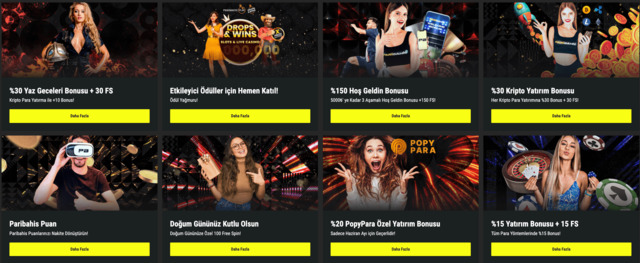
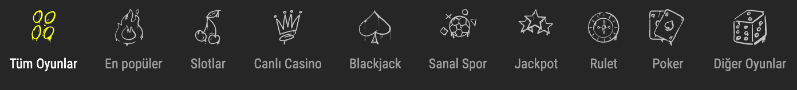

Paribahis
- Paribahis Destek
- Geçerli Kurasao Lisansı
- Yeni kullanıcının doğrulanması
- Paribahis Ödeme Bilgileri
- Bonusları ve Promosyonları
- Paribahis Giriş ve Üyelik
- Paribahis Hesap İptali
- Paribahis Casino
- Paribahis Canlı Oyunlar
- Paribahis Bahis
- eSpor karşılaşmaları
- Mobil Site
- Bahis şirketinin oyuncu yorumları
- Sıkça Sorulan Sorular
- Sonuç
Paribahis, kullanıcılara geniş bir oyun ve bahis deneyimi sunan bir online bahis sitesidir. Site, spor bahisleri, canlı bahisler, casino oyunları, canlı casino ve sanal bahis gibi çeşitli oyun seçeneklerine sahiptir. Kullanıcılar, futbol, basketbol, tenis, voleybol gibi popüler sporlara bahis yapabilir veya canlı maçlarda anlık bahisler yapabilirler. Ayrıca, Paribahis'te çeşitli casino oyunları da bulunur, bu da kullanıcıların slot makineleri, rulet, blackjack gibi favori oyunlarını oynama imkanı sağlar. Paribahis, güvenilir ve lisanslı bir platform olup, kullanıcıların güvenli bir şekilde bahis yapmalarını sağlamak için gerekli güvenlik önlemlerini almıştır. Ayrıca, site kullanıcı dostu bir arayüze sahiptir ve kolay erişilebilir müşteri hizmetleri sunar.
Paribahis Sanal Bahis Sitesi Bilgileri
| Firma Adı: | Paribahis |
| Resmi Kayıtlı Adresi: | www.paribahis.com |
| Lisans Bilgileri: | Curacao 8048/JAZ2014-034 ve 10’dan fazla ülkede yerel lisanslar |
| Temel Sağlayıcılar | NetEnt, Playson, PragmaticPlay, Booongo, Aviatrix, Evolution Gaming, Playtech, Oryx Gaming |
| Sitedeki Diller | İngilizce ve Türkçe |
| Kullanılan Para Birimleri | TL, EUR, USD |
| Oyunlar | Betgames, TVBET, Casino, Canlı Casino ve Canlı Oyunlar |
| Hesaba Yüklenebilecek En Düşük Tutar | 25 TL |
| Hesaptan Çekilebilecek En Düşük Tutar | 50 TL |
| İletişim | Canlı destek, e-posta, telefon, Telegram ve Whatsapp, Sosyal Medya |
| Hoş Geldin Bonusu | %150 Oranında 5.000 TL ve 150 FS |
| Mobil Uygulama | Mobil: Android ve IOS / PC: Windows |
| Aktif Bonus Sayısı | 13 |
| Bahis TV | Aktif (Sadece Üyelere Özel) |
| Belge Doğrulama | Zorunlu |
| Çevrim Şartları | Spor’da 10 Katı Casino’da 40 Katı |
| Para Transfer Kanal Sayısıi | 12+ |
| Sadakat Programı | Aktif |
| Ödül Havuzlu Etkinlikler | Aktif |
Paribahis Destek
Paribahis daim 7/24 hızlı bir şekilde destek almanıza imkan tanıyan bir sisteme sahiptir. Canlı destek programıyla birlikte, e-posta ile destek ve diğer destek kanallarının kullanımı hem kolay hem de hızlıdır. Böylelikle her türlü konuda kısa süre içerisinde yardım alınıp, oluşan sorunların çözümü söz konusu olabilir.
Temel destek kanalları ve nitelikleri ise şunlardır:
- Canlı Destek:Üyelik işlemlerinden tutun da hesap iptali, bonus tanımlamaları, ödemelerde yaşanan problemler ve aklınıza gelebilecek tüm konulara dair canlı destekten günün her saati ve zaman diliminde destek alabilirsiniz.
- Telegram:Tüyelik konuları başta olmak üzere diğer birçok konuya dair çözümler elde edebilirsiniz.
- E-posta ile Destek: [email protected] ya da [email protected] isimli e-mail adreslerine 7/24 e-posta ile ulaşabilirsiniz.
- Sosyal Medya ve Whatsapp:Paribahis tarafından sosyal medya ve Whatsapp, genel manada duyuru amacı ve aynı zamanda giriş adresi ilanı için kullanılır. Her ne kadar bu amaçlar doğrultusunda kullanılıyor olsalar da yatırımcıların zaman zaman Paribahis’le bu kanallar üzerinden iletişim kurmaları söz konusu olabilir.
Geçerli Kurasao Lisansı
Paribahis, geçerli bir Curacao lisansına sahip olan güvenilir bir bahis sitesidir. Curacao eGaming otoritesi tarafından lisanslandırılan Paribahis, lisans gerekliliklerini yerine getirerek kullanıcılara güvenli bir oyun ortamı sunmaktadır. Bu lisans, siteye düzenli denetimler yapılmasını sağlar ve adil oyun kurallarının uygulanmasını garanti eder. Paribahis'in Curacao lisansı, kullanıcıların bilgilerinin korunduğunu ve güvenli ödeme işlemlerinin gerçekleştirildiğini gösterir. Ayrıca, bu lisans kullanıcıların şikayetlerini iletmeleri durumunda yetkililerin bu şikayetlere adil bir şekilde yanıt vermesini sağlar. Paribahis'in geçerli Curacao lisansı, kullanıcıların güvenli ve güvenilir bir bahis deneyimi yaşamalarını sağlamaktadır.
Lisanslı bir casino:
- Yasal olarak faaliyet gösterdiği için kullanıcıların haklarını korur ve güvence altına alır.
- Oyun sonuçlarını bağımsız denetimlere tabi tutarak adil bir oyun ortamı sağlar.
- Müşteri memnuniyetini ön planda tutar ve sorumlu oyun politikalarına uyar.
- Oyunculara güvenilir ödeme yöntemleri ve hızlı para çekme imkanı sunar.
- Oyunculara yasal bir çerçeve içinde oyun oynama ve bahis yapma fırsatı sunar.
Yeni kullanıcının doğrulanması
Paribahis, yeni kullanıcıların doğrulanmasını önemseyen bir süreci benimsemektedir. Yeni kullanıcıların hesaplarını doğrulamaları için belirli belgeleri sunmaları gerekmektedir:
- Kimlik Belgesi: Kullanıcıların kimliklerini doğrulamak için nüfus cüzdanı, pasaport veya ehliyet gibi resmi bir kimlik belgesi sunmaları gerekmektedir.
- Adres Kanıtı: Kullanıcıların ikamet ettikleri adresi doğrulamak için fatura, banka ekstresi veya resmi bir belge gibi adreslerini kanıtlayan belgeler sunmaları gerekmektedir.
- Ödeme Yöntemi Belgeleri: Kullanıcılar, para yatırma ve çekme işlemlerini doğrulamak için kullandıkları ödeme yöntemine ait belgeleri sağlamaları gerekmektedir. Bu belgeler banka hesap özeti, kredi kartı ekstresi veya e-cüzdan hesap bilgileri gibi olabilir.
- Fotoğraf Doğrulaması: Bazı durumlarda, kullanıcıların kendi fotoğraflarını veya selfie'lerini hesap doğrulaması için sağlamaları gerekebilir.
Bu belgelerin sağlanması, kullanıcıların hesaplarını doğrulayarak güvenli bir oyun deneyimi yaşamalarını sağlamak için önemlidir. Paribahis, kullanıcıların güvenliğini sağlamak ve dolandırıcılık faaliyetlerini önlemek için doğrulama prosedürünü titizlikle uygular. Doğrulama işlemi tamamlandıktan sonra kullanıcılar, Paribahis platformunda oyun oynamaya ve bahis yapmaya tam erişim elde ederler.
Paribahis Ödeme Bilgileri
Paribahis, geniş bir ödeme seçeneği yelpazesi sunarak kullanıcılara kolay ve güvenilir bir ödeme deneyimi sağlar. Kullanıcılar, çeşitli yöntemler aracılığıyla hesaplarına para yatırabilir ve çekebilirler. Bu ödeme seçenekleri arasında banka havalesi, kredi kartı, e-cüzdanlar ve ön ödemeli kartlar gibi popüler yöntemler bulunur. Paribahis, güvenlik önlemleri alarak kullanıcıların ödemelerini güvende tutar ve gizliliklerini korur. Kullanıcılar, hesap bakiyelerini kolayca takip edebilir ve ödeme işlemlerini hızlı ve güvenli bir şekilde gerçekleştirebilirler. Paribahis, kullanıcılardan herhangi bir işlem için ek bir ücret talep etmez ve çeşitli para birimlerinde ödeme kabul eder.
| Para Yatırma Kanalı | Minimum Yatırım (TL) | Maksimum Yatırım (TL) |
| Jetpapara | 100 | 50.000 |
| Papara 2 | 50 | 50.000 |
| Havale i | 100 | 100.000 |
| Kolay Havale | 100 | 100.000 |
| Kripto Ödeme | 50 | 500.000 |
| Kredi Kartı | 50 | 1.000 |
| PeP | 25 | 10.000 |
| MEFETE | 25 | 20.000 |
| Payfix | 25 | 50.000 |
| Havale | 500 | 10.000 |
| Paybol | 25 | 50.000 |
| Jeton | 50 | 50.000 |
Nasıl para yatırabilirim?
- “Cüzdan” sayfasına giriş yapınız ve “Para Yatır” sekmesine doğru ilerleyiniz.
- Ardından para yatırma yöntemlerinden size en uygun olanını seçiniz.
- Hemen ardından tutar girişi yapınız ve bonus seçimi gerçekleştiriniz.
- Sonrasında ise para yatırma işlemlerine dair doğrulama adımlarını tamamlayınız.
- Hesabınızdan, Paribahis tarafından belirtilen bilgilere ödeme sağlayınız.
- Ödemeye dair dekontu Paribahis sistemine yükleyiniz.
- Kısa süre içerisinde kontroller sağlanacak, ödeme işleminiz doğrulanıp tarafınıza konu hakkında bilgi verilecektir.
| Para Çekme Kanalı | Minimum Yatırım (TL) | Maksimum Yatırım (TL) |
| Kripto ile Para Çekme | 200 | 200.000 |
| MEFETE | 50 | 20.000 |
| jetPapara | 100 | 50.000 |
| PeP | 50 | 10.000 |
| M Pay Papara | 50 | 5.000 |
| iPayfix | 100 | 20.000 |
| Jeton | 50 | 20.000 |
| MEFETE | 25 | 20.000 |
| Papara | 20 | 12.000 |
| Havale | 500 | 20.000 |
| Kolay Havale | 250 | 50.000 |
| Paybol | 50 | 50.000 |
Nasıl Para Çekme İşlemi Yapılır?
- “Hesabım” ve “Para Çekme” adımlarını takip ediniz.
- Açılan sayfada sizin için en kolay olan para çekme yöntemini seçiniz.
- Sonrasında tutar girişi yapınız.
- Seçtiğiniz yönteme dair gerekli doğrulama işlemlerini gerçekleştiriniz ve hesap bilgilerinizi tanımlayınız.
- Para çekme talebiniz alınacaktır ve kısa süre içreisinde para çekme işleminize dair konu hakkında tarafınıza bilgi verilecektir.
Paribahis Bonusları ve Promosyonları
Paribahis firması tarafından yatırımcılara sağlanan birçok bonus ve promosyon türü mevcuttur. Yatırım bonusları, kayıp bonusları, turnuvalar, üyelik bonusları gibi daha birçok bonus türünden bahsedilebilir. Yatırımcılar belirli ve kolay şartları yerine getirmeleri durumunda belirtilen tutarlarda bonuslar kazanırlar. Sonrasında da kazanmış oldukları bonusların çevrim şartlarını yerine getirerek, ek gelir elde etme imkanına da sahip olurlar.
Üyelik Bonusları:
Yatırımcıların Paribahis’e üye olmaları nedeniyle sahip oldukları avantajlardır. Bu avantajlar sadece üyelere geçerli olduğu için üyelik bonusları olarak tanımlanırlar.
| Üyelik Bonusları | %150 oranında 5.000 TL’ye kadar hoş geldin bonusu ve ek 150 Freespin imkanından yararlanabilirsiniz. |
| Yapmış olduğunuz her yatırım özelinde Paribahis Puan kazanabilir ve sonrasında bu puanları nakde dönüştürebilirsiniz. | |
| Doğum gününüzde size özel tanımlanan 100 Freespin bonusundan faydalanabilirsiniz. |
Turnuvalar:
Paribahis ve Casino sağlayıcıları tarafından düzenlenen bonus etkinlikleri ile devasa havuz ödüllerinden devasa bonus tutarları kazanabilirsiniz.
| Turnuvalar | 30.000.000 Euro tutarında ödül havuzu ile Pragmatic Play Ödül Yağmuru bonus etkinliği |
| Spinomenal 150.000 Euro Ödül Havuzlu Ödül Yarışı! | |
| Soruları tahmin ederek ödül havuzu 100.000 USD olan bonus etkinliği |
Yatırım Bonusları:
Yapmış olduğunuz para yatırma işlemlerine özgü bonus kazanmanıza olanak sağlayan bonuslara, yatırım bonusları denir.
| Yatırım Bonusları | %30 oranında yapmış olduğunuz her kripto para yatırma işleminde bonus kazanabilirsiniz. |
| Yapılan her para yatırma işleminde %15 oranında yatırım bonusu ve ek olarak 100 freespin | |
| Sadece Mayıs ayında geçerli Poppy ile yapılan yatırımlarda %20 oranında para yatırma bonusu |
Paribahis Giriş ve Üyelik
Paribahis sanal bahis sitesine giriş yapabilmeniz adına ilk olarak üyelik oluşturmanız gerekir. Oluşturduğunuz üyeliği doğrulamanız sonrasında da direkt olarak istediğiniz zaman bahis sistemine erişiminiz söz konusu olur.
Üyelik oluşturmak adına aşağıdaki adımları takip etmeniz yeterlidir:
- İlk Kayıt Aşaması: İlk kayıt aşamasında sizden temel bilgiler talep edilmektedir. “Üye Ol” butonuna basmanızla birlikte karşınıza e-posta, telefon numarası, şifre ve sözleşme onayı gibi bilgiler isteyen bir form çıkacaktır. Bu formda istenilen bilgileri doğru, eksiksiz ve size ait bir şekilde doldurmanız son derece önemlidir. Bunun nedeni ise ilerleyen süreçte bu bilgiler özelinde doğrulama yapılmasıdır.
- Üyelik Bilgilerini Tamamlama: İkinci aşamada ise üyelik bilgilerinin tamamlanması gerekir. İlk aşama sonucunda yönlendirilmiş olduğunuz bahis sisteminde “Profil” kısmına giderek, bu kısımda; isim soyisim, doğum tarihi, adres, para birimi, ülke ve daha birçok bilgiyi ilgili alanlara tanımlamanız gerekir.
- Hesap Bilgilerinin Doğrulanması: Bu aşamada ise tanımlamış olduğunuz her bilginin belgeler vasıtasıyla doğrulanması söz konusu olacaktır. Yapmanız gereken ise kimlik bilgilerinizin doğrulanması özelinde; kimlik, ehliyet ya da pasaport bilgilerinizi ilgili alanlara girmek, adres bilgilerinizin doğrulanması özelinde; ikametgah belgesi, fatura ya da banka hesap dökümü gibi belgelerin ibrazını gerçekleştirmektir. Ek olarak kredi kartı ile para yatırmak isterseniz, kredi kartı doğrulaması da yapmanız gerekir.
- Hesap Aktivasyonu: Son aşamada ise e-posta üzerinden gönderilen link ve cep telefonunuza gönderilen SMS doğrulama kodlarıyla aktivasyon işlemleri tamamlanmaktadır. Böylelikle hesabınızın aktivasyon süreci de tamamlanır ve üyelik işlemleri sonuçlanmış olur.
Üyelik işlemlerinin sonuçlanmasıyla birlikte artık dilediğiniz gibi giriş yapabilirsiniz. Paribahis’e giriş için de aşağıdaki adımları takip etmeniz yeterlidir:
- Sitemiz üzerinden elde ettiğiniz giriş adresi ile Paribahis’in güncel adresine giriş yapınız. Aynı zamanda mobil uygulama üzerinden de giriş yapabilirsiniz.
- Ardından “Giriş Yap” kısmına tıklayarak, sadece kullanıcı adı veya e-mail adresi ve şifrenizi giriş yapınız.
- Siteye ikinci girişiniz ise gerekli doğrulamaları tamamlayınız. Değilse zaten giriş işleminiz başarıyla tamamlanacaktır.
Paribahis Hesap İptali
Paribahis hesap iptali, kullanıcıların hesaplarını kapatma taleplerini yerine getirme hizmetini sunar. Hesap iptali için kullanıcılar, Paribahis müşteri hizmetleriyle iletişime geçerek taleplerini iletebilirler. Hesap iptali işlemi, kullanıcıların hesaplarının tamamen kapatılmasını ve tüm kişisel bilgilerinin silinmesini sağlar.
Paribahis hesabını iptal etmek için 4 adım:
- Paribahis hesabınıza giriş yapın ve hesap ayarlarına erişin.
- Hesap ayarları bölümünde "Hesap İptali" veya "Hesabımı Kapat" gibi bir seçeneği arayın.
- Hesap iptali talebinizi belirtmek için gerekli adımları takip edin. Bu genellikle bir onaylama süreci gerektirebilir.
- İsteğinizi tamamladıktan sonra, Paribahis müşteri hizmetleriyle iletişime geçin veya sistem tarafından belirtilen yönergeleri izleyin. Hesabınızın iptali için gereken süre ve işlemler hakkında daha fazla bilgi alacaksınız.
Hesap iptali işlemi, kullanıcıların kendi istekleri doğrultusunda gerçekleştirilir ve Paribahis'in güvenlik ve gizlilik politikalarıyla uyumlu bir şekilde işlem yapar. Hesap iptali sonrasında, kullanıcıların Paribahis'e erişimi ve bahis oynama yetenekleri sona erer.
Paribahis Casino
Paribahis sanal bahis sitesinin Casino alanında devasa bir bahis ya da casino ortamı sunduğunu belirtmek gerekir. Başlangıç, orta ve uzman seviyelerindeki tüm yatırımcılara dair çeşit çeşit birçok bahis seçeneği mevcuttur. Yatırımcılar tüm bu yatırım seçeneklerini diledikleri gibi değerlendirebilirler ve bedava oyna seçeneğiyle de doğrudan bu yatırımlar özelinde ücretsiz tecrübe sahibi olabilirler.
Slot Oyunları:
Casino alanında slot oyunlarının yeri ve önemi büyüktür. Kolay öğrenilen ve basit yapısı nedeniyle çok tercih edilir. Slot oyunlarında yatırımcılar oyun tarafından sunulan ödül tablolarına uymak durumundadırlar. Bu ödül tablolarını slot makinesinde yakalayıp, 35.000 katı kadar çarpana ulaşmak isterler.
| Sağlayıcılar | Popüler Oyunlar |
| Pragmatic, EGT, Evolution, NetEnt, Fazi, Relaxgaming, Bgaming, Gaming Corps, Playson, Ruby Play, Reevo, Play’n Go, Red Tiger, YGGDRASIL, Ezugi, Fugaso, Kiron, Kalamba, No Limit City, Big Time Gaming, Hacksaw | Blood Suckers, The Crown, Phoenix Fury, Magnify Man, The Great Pigsby, Shining Crown, Book of Nibelungen, Megaways MOB, Aloga Christmas, Gonzo’S Quest Megaways |
Akıllı Oyunlar:
Yatırımcıların herhangi bir strateji ya da müdahale göstermesine gerek kalmadan, otomatik sistemlerin işlediği ve şans odaklı olan oyunlardır.
| Sağlayıcılar | Popüler Oyunlar |
| Aviatrix, Bgaming, Gaming Corps, Betsolutions, PragmaticPlay Live, Evoplay, Spribe | Aviatrix, Aviator, Zeppelin, Spaceman, High Striker, Lucky Crumbling, Save the Hamster, Space XY, Jet Lucky 2, To Mars and Beyond, Skyliner, Plinko, Bank or Bust, Minest, Plinko |
Blackjack:
Her elde kartlardan 21 sayısına yakınlaşmak ya da 21 sayısını elde ederek Blackjack yapmak, oyuncuların en temel amacıdır. 9’a kadar olan kartlar aynı değere sahipken, Q, K, A gibi kartlar ise farklı sayısal değerlere sahip olurlar.
| Sağlayıcılar | Popüler Oyunlar |
| Evolution, Games Inc, Play’n Go, Red Tiger, Betsoft, Pragmaticplay Live, G Games, TVBET, Playtech, Red Rake, Game Art, Mascot | Pontoon, Blackjack, A Blackjack Free Bet Blackjack, Exclusive Blackjack 2, Blackjack MH VIP, Infinite Blackjack, Lightning Blackjack, Blackjack Bonus, Red Queen Blackjack, Soho All Bets Blackjack, Free Chip Blackjack, Ezugi Live Blackjack |
Sanal Spor:
Birçok spor branşının doğrudan bilgisayarlar tarafından karşılaşmaya dönüştürüldüğü ve yatırımcıların ise sadece tahmin yapmalarının yeterli olduğu bir bahis türüdür.
| Sağlayıcılar | Popüler Oyunlar |
| 1X2 ve Kiron | Virtual Football PRo, Instant Velodrome, Instant Trotting, Hounds, Instant Speedway, Instant Greyhounds, Instant Football, Virtual Racing, Virtual Tennis |
Jackpot:
Belirli ödül birikimlerinin olduğu ve bu ödül birikimlerinden oluşan patlamalarla yatırımcıların büyük ikramiyeler kazandıkları slot oyunlarına Jackpot oyunları adı verilir.
| Sağlayıcılar | Popüler Oyunlar |
| NetEnt, YGGDRASIL, Gamzix, Playtech, QuickSpin, Betsoft | Divine Fortune, Holmes & The Stolen Stones, Mega Joker, Dragon Chase, Enchanted, Mr.Vegas, A Night in Paris, The Slotfather, Chests of Plenty,, The Glass Slipper, Age of the Gods: Rulers of Olympus, Adventures Beyond Wonderland |
Rulet:
Rulet masasındaki topun, tahminlerinize uygun bir noktada durması ya da direkt olarak tahmininize isabet etmesi ciddi ödül kazanmanıza imkan tanır. Rulet oyunlarındaki temel mantık, rulet topunun duracağı alanı ya da noktayı doğru tahmin etmektir.
| Sağlayıcılar | Popüler Oyunlar |
| EGT, Bgmaing, Elysium, Evoplay, Kalamba, Wazdan, Reevo, Play’n Go, YGGDARSIL, Apollo, Playtech, Games INC, Befsoft, | European 3D Roulette, Baccarat, Amerikan Ruleti, Türk Ruleti, Rus Ruleti, Bulgar Ruleti, Golden Chip Roulette, French Roulette, Roulette Azure, Mega Roulette, Roulette Macao, Speed Roulette, Quantum Roluette Live, Age of the Gods: Jackpots Roulette |
Poker:
En iyi 5’li kart kombinasyonunu yakalamak ya da bu amaca en çok yaklaşmak, Poker oyunlarında kazandıran unsurların başında gelir.
| Sağlayıcılar | Popüler Oyunlar |
| Evolution, Betsoft, Ezugi, Oryx, Red RAke, Playtech, Wazdan, Games Inc, Gaming Corps, TVBET, Evoplay | Three Card Poker, Caribbean Poker, Casino Hold’em, Jacks or Better, Oasis Poker, Texas Hold’em, Trey Poker, Wild Texas, Amerikan Poker 5, Carribena Poker Beach, Amerikan Poker Gold |
Paribahis Canlı Oyunlar
Paribahis'te Canlı Oyunlar bölümünde sunulanlar şunlardır:
- Canlı Casino: Paribahis, gerçek krupiyelerle oynanan çeşitli canlı casino oyunlarını sunmaktadır. Blackjack, Rulet, Baccarat gibi popüler oyunları canlı olarak oynayabilir ve gerçek casino deneyimini evinizin konforunda yaşayabilirsiniz.
- Canlı Poker: Texas Hold'em, Omaha gibi farklı poker çeşitlerini canlı olarak oynayabilir ve rakiplerinizle mücadele edebilirsiniz.
- Canlı Tombala: Oyuncular, gerçek krupiyeler eşliğinde tombala kartlarını satın alabilir, numaraları takip edebilir. Örnek olarak, 90 top ile oynanan klasik tombala veya 75 top ile oynanan Amerikan tombalası gibi farklı tombala çeşitleri canlı olarak sunulmaktadır.
- Canlı Slot Oyunları: Paribahis'te canlı slot oyunları da yer almaktadır. Gerçek krupiyeler eşliğinde slot oyunlarını oynayabilir ve büyük kazançlar elde etme şansını yakalayabilirsiniz.
Paribahis Canlı Oyunlar bölümü, oyunculara gerçek krupiyelerle etkileşimli bir oyun deneyimi sunmakta ve adil oyun ortamı sağlamaktadır.
Paribahis Bahis
Paribahis firmasının bahis bölümü, spor bahisleri ve canlı spor olmak üzere ikiye ayrılır. Her iki alanda da yatırımcıların spor karşılaşmalarına dair kupon oluşturma mantığıyla hareket etmeleri gerekir. 40’tan fazla spor branşının yer aldığı bu alanlarda, gerek standart spor bahis karşılaşması gerekse canlı yatırım gibi seçeneklerde yatırımlarınızı gerçekleştirmeniz söz konusu olur.
| AnaSayfa | Spor karşılaşmalarının genel olarak tarafınıza sunulduğu, temel spor gündeminin yer aldığı bir bahis alanıdır. |
| Canlı | Canlı olarak yatırım yapabileceğiniz spor karşılaşmalarını görüntüleyebileceğiniz bir alandır. |
| İzleme Listesi | Seçtiğiniz detaylar ve unsurlar özelinde takip edebileceğiniz karşılaşmaların yer aldığı bir alandır. |
| Takvim | Belirli tarih ve saat aralıklarındaki karşılaşmalara göz atabileceğiniz bir alandır. |
| Bahis Akışı | Popüler oynanan bahis tahminleri ve karşılaşmalara dair gerek oran gerekse tutar bilgilerini alabileceğiniz bir alandır. |
| Popüler Ligler | Türk bahis yatırımcıları için yatırım anlamında cazip olan spor branşları ve bu branşlara dair liglerdeki karşılaşmaların yer aldığı bir noktadır. |
| Tüm Sporlar | 40’tan fazla spor branşını tek tek görüntüleyebileceğiniz bölümdür. |
| Canlı Yayın | Canlı olarak karşılaşmayı takip edebileceğiniz bir yayın akış alanıdır. Karşılaşma listeleri ve yayınları yer alır. |
| Canlı İstatistikler | Yayını olmayan karşılaşmaları en azından istatistikler üzerinden takip edebileceğiniz bir alandır. |
Paribahis ile Spor Bahis Yatırımı Nasıl Yapılır?
- İlk olarak “Spor Bahisleri” ya da “Canlı Spor” bahisleri alanlarından herhangi birine giriş yapınız.
- Ardından karşılaşmaları kategorilerine göre sıralayınız. İlgilendiğiniz karşılaşmaların oranlarına ve istatistiklerine göz atınız.
- Hemen sonrasında karşılaşmaya dair bahis tahmin seçeneğini işaretleyiniz. Tek maçlık bir kupon yapacaksanız, kuponunuza ilerleyiniz. Birden fazla maç ekleyecekseniz tahmin yapmaya devam ediniz.
- Ardından “Bahis Kuponu” alanında oluşturduğunuz kupona göz atınız ve kupona dair tutar ya da sistem ayarlamalarını sağlayınız.
- Sonrasında kuponunuzu onaylayınız ve böylelikle yatırım işlemlerinizi tamamlayınız.
- Oluşturduğunuz kuponu “Bahislerim” kısmından takip edebilirsiniz.
- Tüm bu detaylar spor ya da canlı spor kategorileri için aynıdır. Herhangi bir değişiklik söz konusu değildir. Sadece canlı spor bahislerinde hızlı olmak gerekliliği, oranların her an değişebileceği ya da kapanabileceği unutulmamalıdır.
Paribahis'te Türk oyuncular için popüler olan sporlar şunlardır:
- Futbol: Türk Süper Lig, UEFA Şampiyonlar Ligi, Avrupa ligleri ve uluslararası turnuvalar gibi birçok futbol etkinliğine bahis yapabilirsiniz.
- Basketbol: Paribahis'te Türk Basketbol Süper Ligi, NBA ve diğer uluslararası basketbol ligleri için bahis yapabilirsiniz.
- Tenis: Tenis, Paribahis'te popüler olan bir diğer spor dalıdır. Grand Slam turnuvaları, ATP ve WTA turnuvaları gibi çeşitli tenis etkinliklerine bahis yapabilirsiniz.
- Voleybol: Paribahis'te Türk voleybol ligleri ve uluslararası voleybol etkinliklerine bahis yapabilirsiniz.
- Formula 1: Motor sporlarına ilgi duyanlar için Formula 1, Paribahis'te popüler bir seçenektir.
Bu, Paribahis'te popüler olan spor dallarının sadece birkaç örneğidir. Site, geniş bir spor bahisleri portföyü sunarak farklı ilgi alanlarına ve tercihlere hitap etmektedir.
eSpor karşılaşmaları
Paribahis, eSpor tutkunları için çeşitli eSpor karşılaşmaları sunmaktadır. Oyuncular, popüler eSpor oyunlarına canlı olarak bahis yapabilir ve heyecan dolu mücadeleleri takip edebilir. Gibi oyunlar üzerine bahis seçenekleri sunulmaktadır:
- Örneğin
- League of Legends
- Dota 2
- Counter-Strike: Global Offensive
Canlı yayınlar eşliğinde gerçekleşen eSpor karşılaşmaları, oyunculara yüksek bahis oranları ve kazanç fırsatları sunmaktadır. eSpor bahisleri, oyuncuların takımların performansını değerlendirmelerini ve doğru tahminlerde bulunmalarını gerektirir.
Mobil Site
Paribahis’in mobil uygulamasını cep telefonunuza indirmeniz durumunda, artık giriş adresi arama derdine son verebilirsiniz. Mobil uygulama herhangi bir şekilde kapanmayan ve erişimi kapatılmayan bir yapıdır. Bu nedenle giriş adresi sorunu yaşamanız durumunda en kesin ve en kolay çözüm mobil uygulama olacaktır. Peki, mobil uygulama nasıl indirilir ve nasıl kurulur?
Paribahis Android ve IOS Mobil Uygulama İndirme, Kurulum İşlemleri:
- Paribahis’in mobil uygulama indirme işlemleri için sitede bulunan telefon simgesine tıklamanız gerekir. Mobil sitede ise “Paribahis Uygulaması” alanına tıklanması yeterlidir.
- Hemen ardından açılan sayfada karşınıza çıkan simgelerden, cep telefonunuzla uyumlu olana tıklamanız büyük önem taşır. Cihazınız Apple markalı bir cihaz ise IOS logosuna, Android işletim sistemine sahipse Android logosuna ve Windows işletim sistemine sahipse de Windows logosuna tıklamanız gerekir.
- Tüm bu işlemlerin ardından her cihaz için farklı farklı QR kodlar karşınıza çıkar. Windowslarda ise direkt olarak Chrome eklentisi üzerinden kurulum gerçekleşir.
- Karşınıza çıkan QR kodu cep telefonunuzun kamerasına okutmanız durumunda uygulama dosyasının indirileceği sayfaya yönlendirme yapmanız gerekir.
- Ardından açılan sayfada indirme işlemi başlar ve uygulamanın kurulum dosyaları cep telefonunuza iner.
- Kurulum dosyalarını başlatmanız durumunda kurulum başlar ancak bu noktada “bilinmeyen kaynaklardan yapılan yüklemelere izin ver” seçeneğini işaretlemeniz büyük önem taşır
- Sonrasında kurulum işlemleri devam eder uygulama cep telefonunuza kurulur. Böylelikle kurulumlar sonuçlanmış olur ve uygulamayı tekrar kullanımınız mümkündür.
| İşletim Sistemi | Versiyonu | Güncellemeler |
| Windows | Windows 7 ve üstü işletim sistemlerinde çalışır. | Güncellemeler Google Chrome eklenti marketinden otomatik olarak gerçekleştirilir. |
| Android | Android 5.0 ve üzeri işletim sistemlerinde çalışır. | Güncellemeler manuel olarak yapılır. Güncelleme gerektiği zaman uygulama uyarı verir ve yukarıda yer alan indirme adımları takip edilirse, uygulamanın güncel versiyonu cihaza kurulur. |
| IOS | IOS 10.0 ve üzeri işletim sistemine sahip cihazlarda, aynı zamanda iPhone 6 ve üzeri sürümlerde çalışır. | Güncellemeler kullanıcı tarafından, uygulamanın yeniden kurulumu ile yapılır. Yukarıdaki indirme adımlarının ve kurulum adımlarının tekrarlanması ile güncelleme sağlanır. |
Paribahis bahis şirketinin oyuncu yorumları
Paribahis bahis şirketi hakkında oyuncu yorumları genellikle olumlu yönde olmuştur.
- Oyuncular geniş bir spor bahisleri seçeneği, çeşitli casino oyunları ve canlı oyunlar sunan Paribahis'i beğenmektedir.
- Ayrıca, hızlı ödeme işlemleri, güvenilirlik ve güvenlik konularında da olumlu geri bildirimler almaktadır.
- Oyuncular aynı zamanda müşteri hizmetlerinin etkin ve yardımcı olduğunu belirtmektedir.
Ancak, her oyuncunun deneyimi farklı olabilir, bu yüzden dikkate alınması gereken birçok faktör vardır. Oyuncuların kendi deneyimlerini ve tercihlerini göz önünde bulundurmaları önemlidir.
Sıkça Sorulan Sorular
-
Paribahis giriş adresine nereden ulaşabilirim?
Paribahis giriş adresine başta sitemiz olmak üzere, Paribahis’in diğer resmi birçok kanalı üzerinden kolaylıkla ulaşabilirsiniz. -
Paribahis ödeme yapıyor mu?
Paribahis ödeme hassasiyeti konusunda son derece büyük bir firmadır ve yatırımcılara her daim en kısa süre içerisinde ödeme yapar. -
Paribahis yasal bir bahis sitesi mi?
Paribahis her ne kadar ülkemizde olmasa da global anlamda yasal olarak hizmetlerini sunan bir bahis firmasıdır. -
Bonus kodu nasıl alınır?
Paribahis'in güncel promosyonlarını takip ederek bonus kodlarını öğrenebilirsiniz. Bunun için genellikle Paribahis'in resmi web sitesi, sosyal medya hesapları veya e-posta bildirimleri gibi kanalları kullanabilirsiniz. Bonus kodunu elde ettikten sonra, hesabınıza girerek ilgili bonusu aktif hale getirebilirsiniz.
Paribahis'in çalışması hakkında sonuç
Paribahis, geniş bahis seçenekleri, çeşitli casino oyunları ve canlı oyunlar sunan bir platform olarak değerlendirilebilir. Oyuncular, çeşitli spor dallarında bahis yapma imkanı bulurken, aynı zamanda çeşitli casino oyunlarında da keyifli vakit geçirebilmektedir. Platform, hızlı ödeme işlemleri ve güvenli bir oyun ortamı sağlamak için çeşitli güvenlik önlemleri almaktadır. Müşteri hizmetleri ekibi, oyunculara 7/24 destek sunarak sorularını yanıtlamakta ve yardımcı olmaktadır. Ancak, her oyuncunun deneyimi farklı olabilir ve bahis oynamadan önce platformun kurallarını ve politikalarını dikkatlice incelemek önemlidir.
Paribahis Yorumlar
Kartal, 22
Paribahis Türkiye’nin en prestijli ve en güvenli bahis firmalarından birisidir. Adından çok sayıda söz ettirmiş bir bahis sitesi olarak üyelerine en yüksek derecede hizmet sunarak daim oyuncularının güvenini kazanmış bir firmadır.
Erme, 27
Üyelerin küçük bir sorun olmasında dahi her zaman 7/24 canlı destek hizmeti sunan Paribahis şikayet konusunda minimum seviyededir. Herhangi bir sorun yaşandığında anında sitenin müşteri temsilcileri oyuncuyla iletişime geçip üyenin sorununu en kısa süre içerisinde çözer.
Ömer, 53
Paribahis yatırım yöntemlerinde çok çeşit olması sitenin çok büyük artısıdır. Para yatır kısmında 16’dan fazla yatırım yöntemi bulunmaktadır ve her biri çok kolay ve basit bir yöntemlerdir para yatırma işlemini 5 dakika içerisinde tamamlanıyor.
Yıldız, 38
Paribahis sitesine ara sıra giriş yaparken sorun yaşıyordum adres değişikliği yüzünden, ama mobil versiyonu olduğunu öğrendiğimde bu sorun çözüldü. Bonus sayfasında en aşağıda bulunan linke tıklayarak mobil versiyonunu indirdim ve giriş konusunda işim çok kolaylaştı daim güncel adres olarak artık giriş yapıyorum.
İlker, 26
Para çekmek isterken belge talebinde bulundukları zaman biraz rahatsız oldum, doğal olarak güvenlik problemlerinden dolayı. Fakat Paribahis sitesinin lisansını kontrol ettim ve güvenilir olduğuna emin oldum. Belgelerimi gönderdiğim zaman bu işlem çok uzun sürer diye zannettim fakat 5-10 dakika içerisinde müşteri temsilcileri evraklarımı hesabıma ekleyerek profilimi doğruladılar ve bana bu konu hakkında bilgi verdiler, ardından hemen çekme işlemini başlattım ve başarıyla sonuçlandı.
Aykut, 34
Üyelik bonusu hakkında çok bilgim yoktu, fakat yatırım yaptığım zaman Paribahis sitesine yatırım ile beraber bonuslarımda otomatik olarak hesabıma tanımlandı, ekstra olarak freespin hediye ettiler fakat bu freespinleri canlı destek hattına bağlanarak müşteri temsilcilerinizden talep etmeniz gerekiyor.
Temmuz, 42
İlk defa bahis oynamak istiyordum ama hangi firmada oynayacağıma karar veremiyordum, birçok araştırmaların ardından Paribahis’de bahis almaya karar verdim ve hiç pişman değilim. Hem güvenlik hem oyunlar konusunda çok basit ve rahat bir sitedir. Oyunlar hakkında eğer bir bilginiz yoksa her oyuna giriş yaptığınız zaman oyun kurallarını okuyarak öğrenip bahis heyecanınıza devam edebilirsiniz.